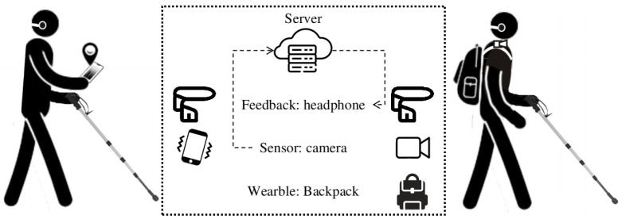
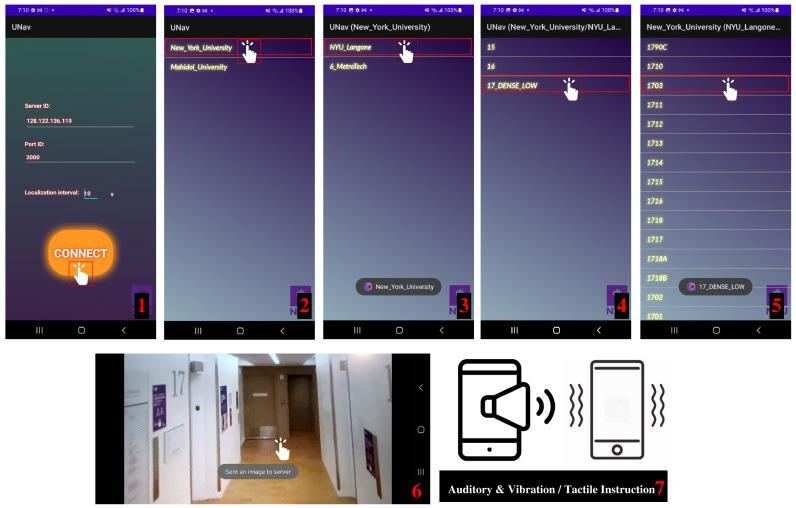

02 · Sensors
Sensor Possibilities
Page summary0:00
Indoor navigation systems can be grouped by what they sense: camera-based, non-camera-based, or hybrid. The choice changes cost, deployment effort, robustness, and the information available to the system. [2]

Part 1 · Sensing options
Camera-based sensing
A smartphone RGB camera is attractive because it is already widely available and captures rich scene information. Images can be used to recognize a QR marker, retrieve visually similar reference images, recognize landmarks, or estimate geometric pose. UNav requires standard RGB images from a mobile app or camera-equipped wearable. [4] [5]
Non-camera sensing
Indoor systems have also used technologies such as RFID, NFC, Bluetooth beacons, ultra-wideband, infrared, and ultrasound. These can avoid some visual problems, but many approaches require equipment to be installed or maintained in the building. The 2020 review catalogs these technologies and distinguishes them from camera-based systems. [2]
Hybrid sensing
Hybrid designs combine information sources. The QR-map paper is a clear example: the camera reads a QR control point while an inertial measurement unit (IMU) supports positioning between control points. The QR code supplies an absolute reference; inertial sensing helps provide continuity as the device moves. [3]
| Approach | Extra building infrastructure | Portability | Deployment / maintenance burden | Main trade-off |
|---|---|---|---|---|
| Natural-image VPR | No dedicated positioning markers | High: camera-equipped mobile/wearable | Requires reference mapping and map updates | Rich CV, but depends on visual appearance and computation [4] |
| QR markers | QR nodes/control points | High | Low-cost markers must be installed, surveyed and remain visible | Explicit landmarks simplify place identification [3] |
| QR + IMU hybrid | QR nodes plus device IMU | High | Marker maintenance + sensor-fusion logic | IMU provides continuity; QR anchors correct accumulated drift [3] |
| Beacon / radio approaches | Usually transmitters/anchors | High for user device | Hardware installation, calibration and maintenance vary by technology | Avoid visual failure modes but add physical infrastructure [2] |
Part 2 · Real hardware
Hardware actually used by the focal systems
The sensor categories above become concrete when we list the devices the papers report using.
| Role | UNav (2022 system paper) [4] | UNav (2024 user study) [5] |
|---|---|---|
| Mapping sensor | Consumer 360° camera (Insta360), handheld at about 6 ft | 360° camera walkthrough with three loops per floor |
| User-side camera | Android phone camera, or a camera on a wearable backpack | 16 MP autofocus USB camera on the chest strap |
| User-side compute | NVIDIA Jetson AGX Xavier in the backpack (also able to run fully offline) | NVIDIA Jetson Orin in the backpack (client software and networking) |
| Server compute | Cloud server doing localization and routing | NVIDIA DGX A100 node; the authors note it can also run on a laptop with an RTX 2080 Super |
| Output to user | Audio instructions via bone-conduction headset; vocal commands via microphone | Bone-conduction headset with microphone for voice commands |
| Weight / power | — | 0.7 kg backpack plus 3.5 kg integrated system including a large battery |
Our observation: the research prototype is heavier than a phone because it includes a dedicated camera, an onboard computer and a battery for multiple trials. The same localization method also runs from a smartphone app, so the backpack mainly buys hands-free use and a stable forward-facing camera. [4] [5]


Part 3 · Capture strategy
Still images or continuous video?
| Query / still-image localization | Continuous video | |
|---|---|---|
| Observations | Localization when an image is captured | Frequent sequential observations |
| Processing | Potentially lower because selected frames are processed | Potentially higher because many frames arrive |
| Network / battery | Can reduce data transmission | Can increase bandwidth and energy use |
| Tracking continuity | Position updates are discrete | Can support smoother temporal tracking |
UNav's localization pipeline is described around a query image sent to a server and compared with a reference image database; the 2024 wearable system obtains images from its forward-facing camera and returns instructions after processing. [4] [5] UNav's 2022 Android app captured a query image when the user tapped the screen or at a fixed time interval. That is a middle ground: periodic still images rather than full video, which keeps upload and server load low while still refreshing the position regularly. [4] The table above is an engineering comparison rather than a claim that one capture strategy is always superior.